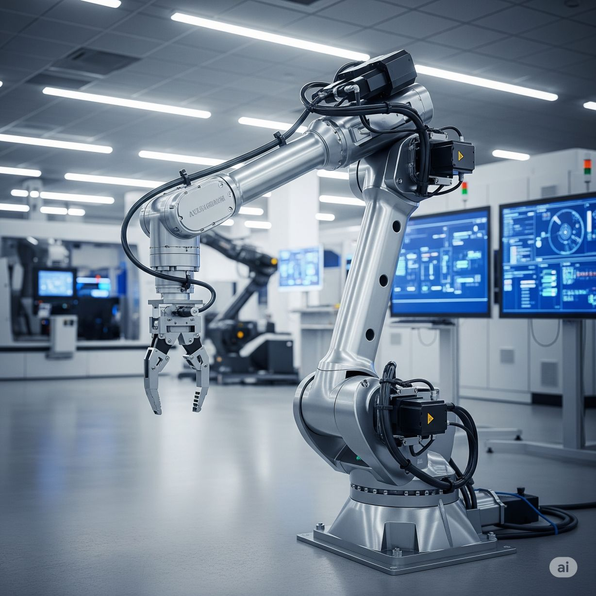

Anatomy of a Robotic Manipulator

A robotic manipulator, often referred to as a robotic arm, is the most common type of robot used in industrial and research settings. It is the workhorse of modern manufacturing, performing tasks from welding and painting to assembly and material handling with a level of precision and endurance that far surpasses human capabilities. At its core, a manipulator is a programmable, mechanical arm designed to interact with its environment by moving an end-effector to a desired position and orientation.

To understand how a manipulator achieves this, we must dissect it into its fundamental components. A robotic manipulator is a complex system of interconnected parts working in concert to produce controlled motion. A deep understanding of this anatomy is fundamental to the study of kinematics, dynamics, and control.
The main components of a robotic manipulator are:
- Links
- Joints
- Actuators
- Sensors
- Controllers